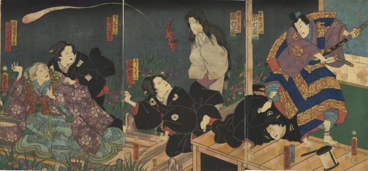

時鳥の亡霊が現われ、時鳥を殺した百合の方が驚いている。時鳥の亡霊は、百合の方をにらみつけている。近くには火の玉がある。
著作者：國貞／出典：親書誌：U426_nichibunken_0373：曽我綉侠御所染；ソガ モヨウ タテシ ノ ゴショゾメ／日付：2014／資源識別子：U426_nichibunken_0373_0001_0000
Copyright (c)2010- International Research Center for Japanese Studies, Kyoto, Japan. All rights reserved.